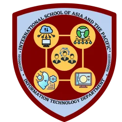
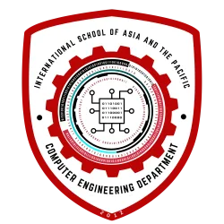
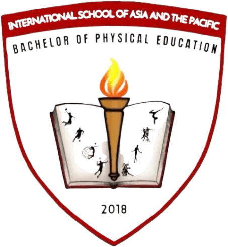
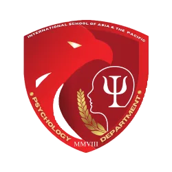
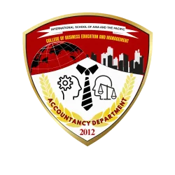

A Distinctive Institution for Multidisciplinary Excellence
In December 1971, Dr. Ronald Pagela Guzman, a medical Doctor, established the Holy Infant Clinic, a 15-bed capacity health care facility situated at Centro Uno, Tuao, Cagayan. This was his way of serving the people of Tuao where he was born and where he and his wife, Wilma Roa, a nurse, resided for quite some time after graduating from college. It is a community hospital where the set up is family centered care. The patients bring their linens and other needs without paying for accommodation fee. A detached kitchen is available where patient’s nutrition is prepared by a family member(s).
They rendered services from birth to death. Geographically, Tuao during that time had no link to the rest of the municipalities as it is surrounded by the Chico River, a tributary of the Cagayan River. During rainy season, the river can overflow that no motor boat can cross. Hence, appendectomy caesarean section at Tuao Emergency Hospital is done in emergency cases. Dr. Guzman trained a community worker to do embalming to assist the community folks revere their beloved departed. House calls and home visits were done for those who cannot come to the clinic to receive treatment and care. Tuberculosis was prevalent and management was carried out during home visits after the initial assessment and diagnosis in the clinic. The Holy Infant Clinic, Tuao was operated as a satellite when a 35-bed capacity Holy Infant Clinic, Tuguegarao was established on July 7, 1980.
Dr. Evelyn Duque served as the resident physician while Grace and Filomena Roa, headed the group of nurses and caregivers who continued to care for the community. This went on for 2 years, a transition that allowed Tuao to produce its own doctors so that continuity to care from private practitioners went on.
Dr. and Mrs. Ronald P. Guzman has a 2-year stint in Nigeria where they worked at Bendel State Hospital, Benin City, Bendel State. Upon return in the Philippines, Holy Infant Clinic Tuguegarao was born. Through the years, it prospered and the hospital services expanded with the opening of the Medical, Surgical, Pediatric and OB-GYNE Departments. It is also complemented with the addition of diagnostic services such as X-ray, Ultrasound, Laboratory Services with Drug Testing Facility and Pharmacy. In 1994, Dr. Ronald, envisioned that education is the antidote to ignorance, poverty and disease. With this advocacy, he established Medical Colleges of Northern Philippines (MCNP), a school that led to the fruition in 1998 of another school which is the International School of Asia and the Pacific (ISAP), offering courses that are relevant and responsive to local, national and global demands. Through the years, MCNP and ISAP have earned the reputation as two of the most prestigious and top performing schools in the country producing global professionals. MCNP was granted an Award of Recognition for being assessed as Category a(t), Mature Teaching Institution under the Institutional Monitoring and Evaluation for Quality Assurance (IQUAME), as one of the three Higher Education Institutions assessed nationwide and the only HEI in Region 2 on March 18, 2008.
Founding Legacy & Continuous Growth
Today, Dr. Christopher Mark R. Guzman, an ortho-surgeon, Dr. Charles Ronald R. Guzman, Internist-lung specialist, Dr. Aileen, a Pediatrician together with Atty. Cristina Guzman and Atty. Olivia Olalia-Guzman, children of the founders, are second generation medical practitioners and legal counsels of the institutions.
In October 2010, the humble beginnings of the Holy Infant Clinic will metamorphose into becoming the leading privately run hospital in Region 2 with the emergence of the Dr. Ronald P. Guzman Medical Center, a 250 bed-capacity Tertiary Hospital that will take pride of a state-of-the-art facility with MRI, CT scans, ultrasound, X-ray, dialysis and the latest in patient care and trauma and diagnostic center manned by specialists. The 150 bed Philhealth department will be the first in the region that will cater to the needs of the disadvantaged and marginalized sector of our society. This is consistent with the principle of the founders on the preferential option for the poor.
Currently, the two schools have produced for the past 15 years a total of ____board topnotchers and adjudged as top rankers in the licensure examination both in the regional and national level. The schools have grown so fast that it has now the 2nd largest enrollment in the tertiary level in the region.
The dynamism Dr. and Mrs. Guzman sparked and the generosity he and his wife generated was made more manifest when he extended scholarship and financial support to 32% of his school’s student population composed mostly of children of poor families. The school has provided assistance to the following special groups: student orphans, indigenous people, honor students, children of elementary and high school teachers, children of rebel returnees, members of the PNP and AFP, and other groups needing assistance.
Academic Programs & Courses Offered
The International School of Asia and the Pacific delivers 12 industry-responsive undergraduate degree programs structured across 6 specialized academic colleges.
Bachelor of Science in Criminology (BSCrim)
Law enforcement administration, forensic sciences, crime investigation, and public safety leadership.

Bachelor of Science in Information Technology (BSIT)
Software development, database administration, network engineering, cybersecurity, and cloud systems.

Bachelor of Science in Computer Engineering (BSCpE)
Computer hardware architecture, embedded systems, microprocessors, robotics, and smart electronics.
Bachelor of Secondary Education (BSED)
Secondary school pedagogy, curriculum design, classroom management, and major subject specializations.

Bachelor of Physical Education (BPED)
Physical fitness, sports coaching, movement education, recreational programming, and wellness pedagogy.
Bachelor of Science in Social Work (BSSW)
Community organizing, social welfare administration, counseling, case management, and child/family advocacy.

Bachelor of Science in Psychology (BSPsych)
Human behavior analysis, psychometrics, psychological testing, counseling theories, and mental health studies.
Bachelor of Science in Tourism Management (BSTM)
Ecotourism planning, airline and travel operations, destination branding, and heritage tourism development.
Bachelor of Science in Hospitality Management (BSHM)
Hotel and resort operations, culinary arts, banquet management, food and beverage service, and guest lodging.

Bachelor of Science in Accountancy (BSAC)
Financial accounting, auditing, taxation, financial reporting, corporate governance, and fiscal assurance.
Bachelor of Science in Customs Administration (BSCA)
Tariff classification, customs brokerage laws, international trade logistics, port clearance, and cargo valuation.
Bachelor of Science in Business Administration (BSBA)
Financial management, marketing strategy, operations management, enterprise innovation, and business analytics.
Institutional Objectives
To achieve the vision and mission, ISAP commits itself to the following avowed objectives:
- Provide every individual equal access to quality and affordable education and extend scholarship programs and other holistic developmental activities.
- Offer enriched and relevant curricular and co-curricular programs and imbue them with passion and selfless service to the community.
- Produce exceptionally skilled professionals and board topnotchers with high board performance ratings.
- Continuously produce research enthusiasts and innovative research output.
- Institute linkages both locally and abroad to ensure opportunities for relevant experiences and employment and to boost community extension programs.
Institutional Outcomes
The International School of Asia and the Pacific institutional outcomes are the qualities that ISAPians must possess.
- Demonstrates through institutional mechanisms, quality standards, and code of good practice reflective of equal participatory decision-making and accountability.
- Practices spiritual values and ethical behaviors that promote and inspire greater harmony and project a credible image in society.
- Exhibits lifelong learning and global competency, proficient in entrepreneurial skills, selfless innovation, and socio-civic services.
- Manifests self-discipline, self-direction, and adaptability in dealing with life’s situations and challenges.
- Mobilizes community resources to foster and sustain institutional programs for community development.
Graduate Attributes
- Role Model – imbued with self-discipline rooted in constitutional provisions, social norms, and other regulations contributory to social development and progress.
- Research Enthusiast – equipped with knowledge of the past and present social milieu, skilled and motivated to discover new ideas, introduce novel approaches, and utilize discoveries for social change and development.
- Exceptional Professional – provided with sufficient learning experiences and exposures both locally and globally, equipped with the attributes required of his professional field and chosen area of expertise.
- Altruistic – imbued with outpouring love for the poor and underprivileged, the welfare of communities, the development of the country, and the promotion of dignity and humanity.
- Life-long Learner – a professional of both formal and informal learning opportunities throughout life, to foster continuously the knowledge and skills needed for employment and personal fulfillment.
- Mighty Eagle – fearless to dream and pursue goals, directed to the realization of plans, strong and confident to deal with challenges, resilient to the signs and demands of the times, and nurturing of the succeeding generation’s future.
- Spiritually Upright – one who keeps the laws of God primary in all undertakings and transcends human aspirations into God’s willful promises.
Vision, Mission, Purpose, and Philosophy
Vision
The International School of Asia and the Pacific is a distinctive institution with multidisciplinary and integrated academic approaches producing exceptionally skilled and values-oriented professionals, thereby uplifting the quality of life and empowering self-sustaining communities of the Asia-Pacific region.
Mission
The International School of Asia and the Pacific works for the holistic development of the person – a socially responsible, virtuous, and versatile individual challenged by the demands of society, responding to the individualized needs of the global community for its productivity and sustainability.
Purpose
“Transforming Lives through Selfless Service”
Philosophy
God created man in His image with distinct talent and skills integral to human progression. These talents, once given adequate appreciation and encouragement, can foster holistic development for his benefit and the betterment of his fellowmen for the glory of God.
Core Values
Dr. Ronald P. Guzman is a visionary founder and Christian leader who pursues the transformation of the nation. The following core values exhibited by the founder should be imbibed by all members of ISAP.
I – Integrity
S – Spiritual Uprightness
A – Altruism
P – Patience
I – Innovativeness
A – Adaptiveness
N – Nationalism
ISAP Hymn
International School of Asia and the Pacific, your name we will uphold as one who shapes our hearts and minds in the Kingship of the Lord.
We will always strive for excellence as our symbol and our shield. We’ll always strive for justice, peace, and love for our nation and for the world.
International School of Asia and the Pacific, wherever we may roam,
The teachings of our dear beloved school are our guide forevermore.
ISAPians, the world awaits you. Go forth and start to serve.
Remember the teachings of our beloved school, now and forevermore.
ISAP Quick Facts
- Established: 1998
- Campus: Alimannao Hills, Peñablanca, Cagayan